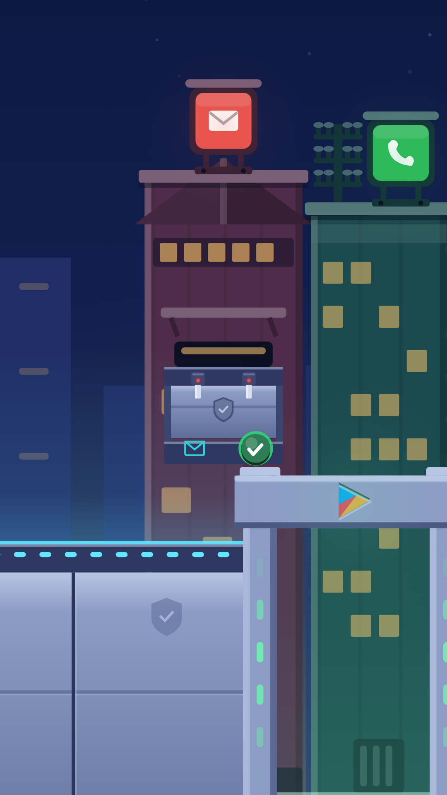
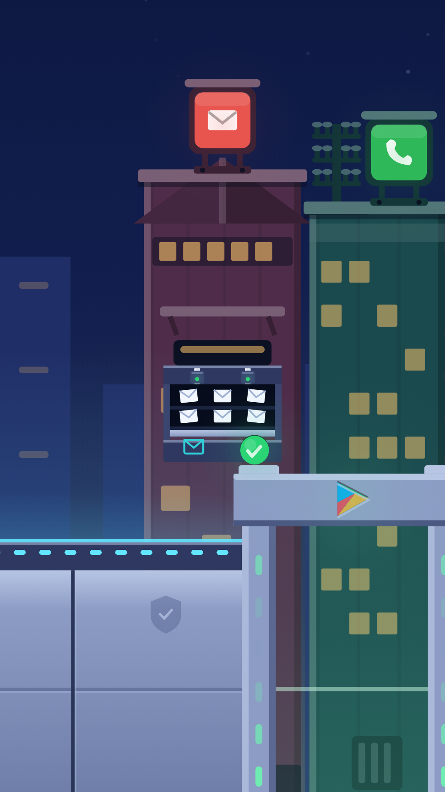
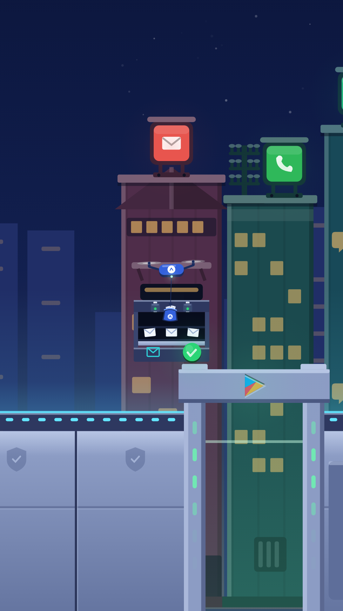
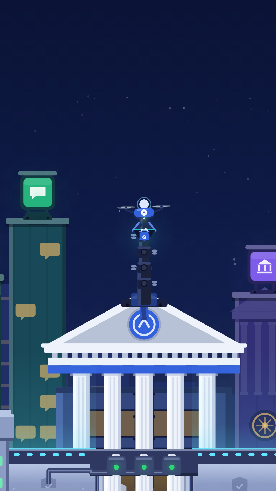

1 · ASKRendered in the film's own interior, with the film's own assets, lighting and camera.
Why the last set failed the silent test. Describe it with the sound off and you get: “a chute opens under a post office and letters fall into a box.” Nothing said who opened it, who receives it, or that you allowed it. The app was never in frame and the granting was never shown — I had removed the wire and left a colour code doing three jobs it cannot do.
The correction. Reuse the grammar the viewer already learned at the boundary wall twenty seconds earlier, because the grant is the same act every time and should look the same every time. Only the consequence differs.
So each building gets an Android service hatch: the protection's shield cast into its leaf, bolts that retract, a lamp that goes red → green, and a leaf that sinks exactly as the wall's door panel sinks. The hatch is also the aperture — what is behind it is the thing the permission gives away — so one object carries all three beats.

1 · ASK
2 · GRANT
3 · COLLECT
5 · DELIVERIt asks. A sealed steel hatch on the post office. Bolt lamps red. The sill shows what is being asked for, and a ✓.
You allow it. The finger presses ✓, the bolts retract to green, the leaf sinks — and behind it is your post.
They take it. The app's drone stands off above and lifts a sack out of the open hatch. The top shelf is emptied into it.
It leaves. The drone carries your post across your own city, toward the building the app built.
They have it. It drops into a port on the app's mast, and that capability's lamp lights. The app now holds your SMS.
tools/echallan/render.mjs used to default to the Echallan composition, which is the abandoned legacy film. The film is the Opening composition, and the renderer now defaults to it.